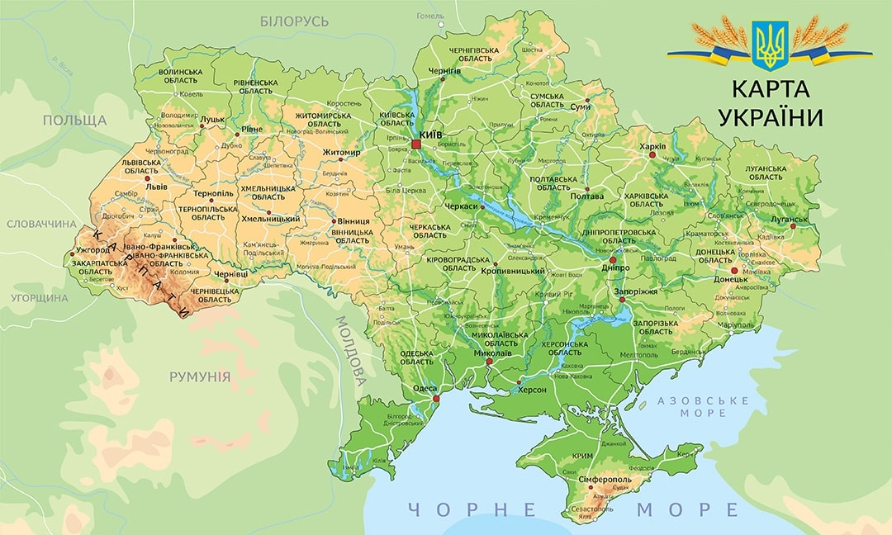
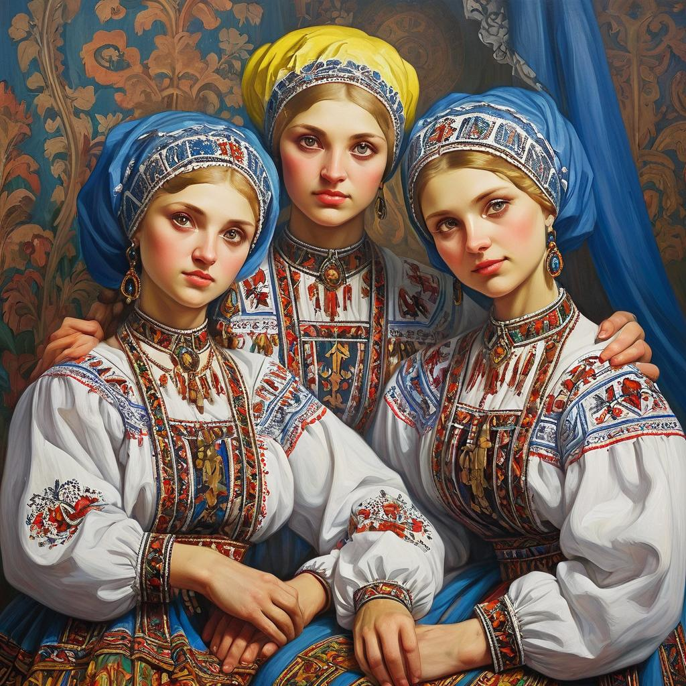
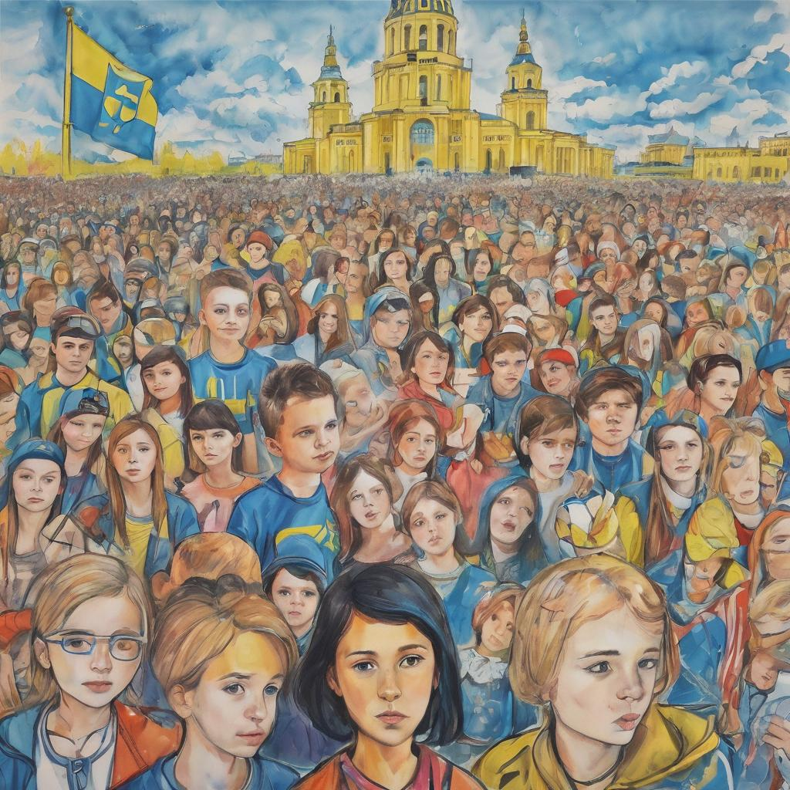

Україна — Земля Вільна та Незалежна
Україна — це країна з великою історією, багатою культурою та сильним національним духом. За своїми кордонами вона має прекрасні карпатські гори, мальовничі степи на півдні та мальовничі міста зі старовинними архітектурними перлинами. Україна є батьківщиною великих думок, талановитих людей та незламної віри у світле майбутнє.
Кожен українець може пишатися своєю країною, її досягненнями та спадщиною. Від великого Києва до маленьких сел, Україна має безмежний потенціал, який розвивається та розквітає кожен день.

Українська Культура та Мистецтво
Українська культура та мистецтво мають величезний вплив на світову сцену. Народні ремесла, вишиванки, писанки та народні обряди стали символами української ідентичності та духовності. Музичні ансамблі, які виконують українські народні пісні та танці, привертають увагу шанувальників з усього світу.
Крім традиційних мистецьких форм, українські художники та митці сьогодення активно працюють у сучасних напрямках мистецтва. Вони створюють унікальні твори, які відображають сучасну реальність та ідеї, що живуть у серцях українців.
Українська культура та мистецтво не лише зберігають традиції минулих поколінь, але й активно розвиваються, вносячи свій вклад у світову культурну спадщину.
Духовні Цінності
Україна — це не лише територія та народ, це також духовність та віра. Велике значення мають українські церкви та монастирі, де люди знаходять покликання покликання, мир та внутрішню силу. Релігійні свята, які відзначаються в Україні, є важливими та дорогими для кожного віруючого.
Духовні цінності українців — це основа, на якій будується їхня моральність та спільні цілі. Це те, що зближує людей та допомагає подолати будь-які труднощі.
Гостинність та Традиції
Українська гостинність відома у всьому світі. Кожен гість в Україні почуває себе як вдома, а кожне свято або урочистий захід запам’ятовується надовго. Традиції — це не лише обряди, а й душа нації, яка передається з покоління в покоління.
Українські традиції охоплюють усі аспекти життя — від обрядової кухні до народних ремесел. Це те, що робить Україну унікальною та неповторною.

Молоде Покоління та Майбутнє
Молоде покоління українців — це майбутнє країни. Їхні ідеї, таланти та енергія відкривають нові можливості для розвитку та досягнень. Вони навчаються на кращих українських та світових університетах, створюють стартапи та проекти, які прославляють Україну у всьому світі.
Майбутнє України — це молодь, яка гордо несе свою спадщину та створює нове, відкриваючи нам нові горизонти та перспективи.
Україна — це країна, що вражає своєю красою, духовністю та потенціалом. Кожен українець є її частиною та має право бути пишним з того, що належить до такої унікальної культури та історії.
